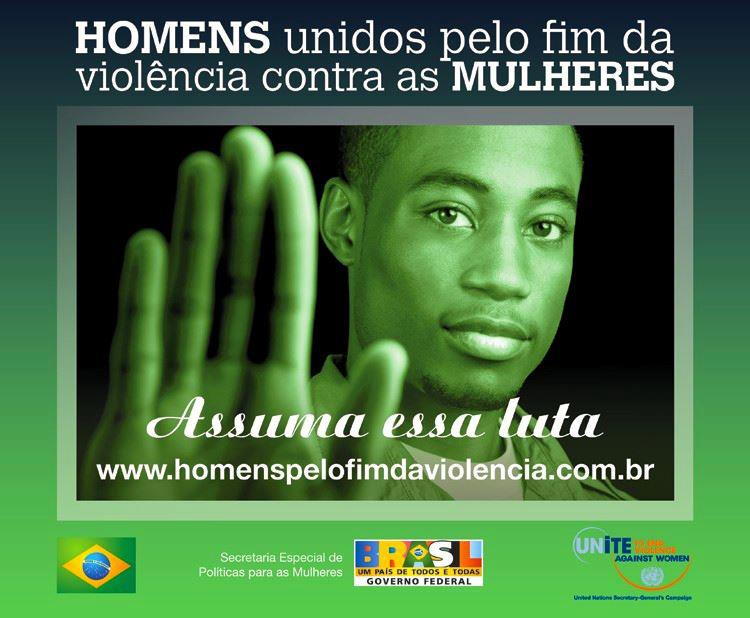

2019 - Globo: Direitos de cidadania

Racismo. Violência. Assédio. Homofobia. Machismo. Em tempos como esse, é preciso mobilizar a sociedade para o fortalecimento de uma cultura que não apenas tolere, mas respeite direitos. Em parceria com a ONU Mulheres, UNESCO, UNICEF e UNAIDS, a Globo lançou plataforma ‘Tudo começa pelo Respeito’, em 2016, um esforço para ampliar a discussão sobre os direitos de mulheres, idosos, LGBTs, negros e negras, deficientes, religiosos, soropositivos e públicos vulneráveis à discriminação e ao preconceito. Por meio da união de esforços e de iniciativas conjugadas com organizações de referência no campo da defesa de direitos, a Globo quer sensibilizar a sociedade sobre a importância da tolerância e do respeito para o bem comum. A ideia é ganhar espaço nas conversas em casa, no trabalho, na hora do lazer, em todos os momentos e lugares em que haja espaço para a reflexão. E, principalmente, incentivar o primeiro passo para uma mudança de atitude. Clique aqui para saber mais sobre a campanha.
2016 - Redes Sociais: Celebridades
Os 100 anos do samba e o alerta para a prevenção da violência contra as mulheres dão o tom da campanha #MeuNúmeroÉ180, inspirada pelo clássico Pelo Telefone, de Donga. Realizada pela Panda Abergine, com o apoio da ONU Mulheres e da campanha do Secretário-Geral da ONU “UNA-SE pelo fim da violência contra as mulheres”, a iniciativa visou incentivar a busca por serviços públicos especializados de atenção às vítimas por meio da Central de Atendimento à Mulher – Ligue 180, da Secretaria Especial de Políticas para as Mulheres do Ministério de Mulheres, Igualdade Racial e Direitos Humanos.. Clique aqui para saber mais sobre a campanha.
2015 - GNT: ElesPorElas (HeForShe)
Dentro do pacote de ações, houve chamadas que irão ao ar nos intervalos da programação do GNT e dos canais Globosat com Astrid Fontenelle, Bela Gil, Marcelo Tas e Rodrigo Hilbert. Os vídeos foram ilustrados também com cenas de crianças e adolescentes em situações do cotidiano que apontam claramente a desigualdade de gênero. Clique aqui para saber mais sobre a campanha.
2008 - Campanha do Secretário-Geral da ONU Una-se pelo Fim da Violência contra as Mulheres
Criada em 2008 pelo secretário-geral da ONU, Ban Ki-moon, e alçada como uma das suas prioridades do seu mandato, a eliminação da violência contra mulheres e meninas está centrada no direito das mulheres e meninas de viverem livres da violência. Desde então, a iniciativa tem mobilizado governos, sociedade civil, setor corporativo, atletas, artistas, mulheres, homens e jovens em todo o mundo.O Brasil foi o o primeiro país a responder à campanha global, liderada pelo secretário-geral da ONU, por meio da iniciativa assinaturas de homens brasileiros coletadas pela campanha “Homens Unidos pelo Fim da Violência contra as Mulheres”. De 2008 a 2009, foram coletadas mais de 50 mil assinaturas pela internet numa demonstração do compromisso público de líderes políticos, atletas, artistas e milhares de anônimos com a implementação integral da Lei Maria da Penha e a efetivação de políticas públicas voltadas para a eliminação da violência contra as mulheres. Clique aqui para saber mais sobre a campanha.